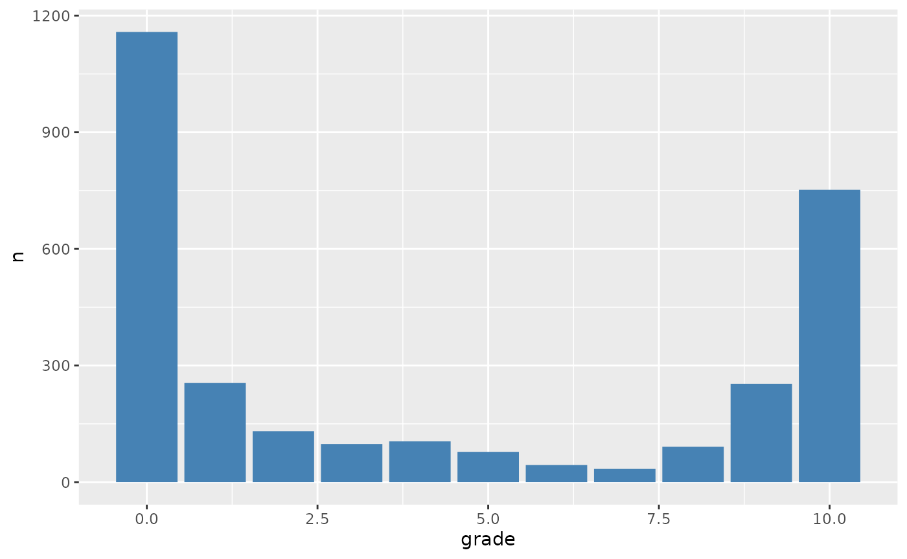
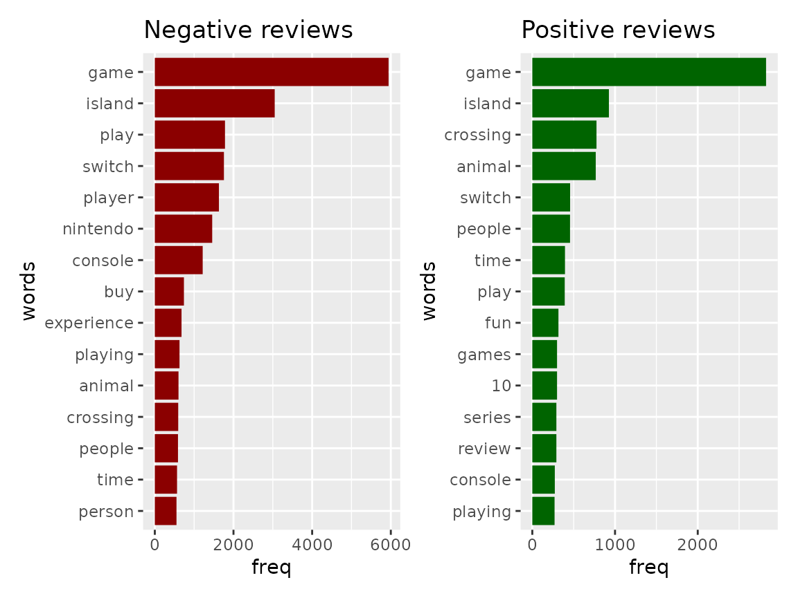
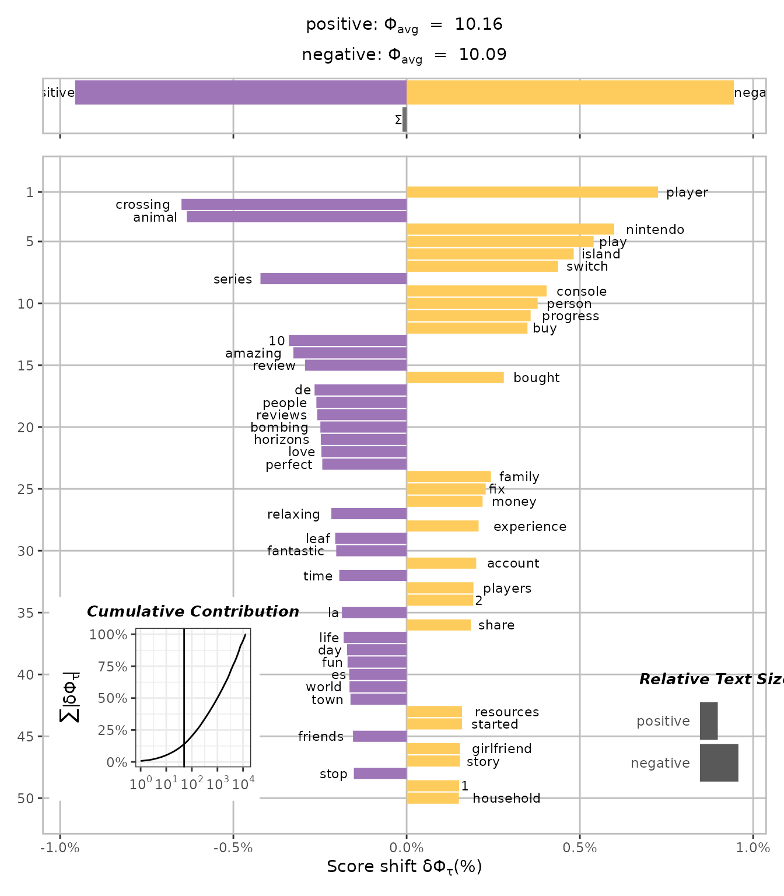

Introduction to shifterator
2022-10-02
Source:vignettes/introduction_shifterator.Rmd
introduction_shifterator.Rmdshifterator is a port from the python shifterator package for visualizing pairwise comparisons between texts. For detailed information about the formulas used to calculate the shifts, you can have a look at the python cookbook.
I’m going to have a look at the Animal Crossing review dataset that was used on a #TidyTuesday episode by Julia Silge. Here is a link to the blog post. This dataset will be used to give a quick overview of how to prepare data to be used with the shifterator functions and how to plot the outcome of the word shift graphs.
So let’s load the data and have a quick look at the grade distribution.
library(dplyr)
library(stringr)
library(tidytext)
library(ggplot2)
library(shifterator)
data("user_reviews")
user_reviews %>%
count(grade) %>%
ggplot(aes(grade, n)) +
geom_col(fill = "steelblue")
A quick look at the data shows that the data is concentrated on the ends, 0 or 10. The mean grade is 4.22 and the median is 2. But let’s take the same definition as used in the blog post, a score higher than 7is a good review and below a bad review. And using the same data cleaning rule to get rid of the word “Expand” that appears at the end of a lot of reviews.
negative_reviews <- user_reviews %>%
mutate(text = str_remove(text, "Expand$")) %>%
filter(grade <= 7)
positive_reviews <- user_reviews %>%
mutate(text = str_remove(text, "Expand$")) %>%
filter(grade > 7)Now that the data is split, shifterator functions expects data to be in two columns, words and their frequencies. You can build those in a lot of different ways, but since I’m using data from a blog post of Julia Silge, I will use tidytext to create word frequency tables.
cleaned_negative_reviews <- negative_reviews %>%
unnest_tokens(word, text) %>%
anti_join(stop_words) %>%
group_by(word) %>%
summarise(freq = n())
cleaned_positive_reviews = positive_reviews %>%
unnest_tokens(word, text) %>%
anti_join(stop_words) %>%
group_by(word) %>%
summarise(freq = n())After the creation of the frequency tables, a quick look at the top 15 words that appear in the positive and negative reviews.
library(patchwork)
p_neg <- cleaned_negative_reviews %>%
top_n(15) %>%
ggplot(aes(reorder(word, freq), y = freq)) +
geom_bar(stat = "identity", fill = "darkred") +
labs(title = "Negative reviews", x = "words") +
coord_flip()
p_pos <- cleaned_positive_reviews %>%
top_n(15) %>%
ggplot(aes(reorder(word, freq), y = freq)) +
geom_bar(stat = "identity", fill = "darkgreen") +
labs(title = "Positive reviews", x = "words") +
coord_flip()
p_neg + p_pos
Looking at the graphs, you can see that “game” and “island” are the top words in both. The word “fun” and the number 10 in the positive reviews is to be expected. But the top words in the negative reviews leave a lot of guessing why they are there. This is where shifterator comes into play. The calculations of the words between the texts and how often they appear give a weight to them. The several word shift calculations available in shifterator can help to distinguish which words are more important in one text or in the other.
entropy <- entropy_shift(cleaned_positive_reviews, cleaned_negative_reviews)
get_shift_graphs(entropy, text_names = c("positive", "negative"))
The shift graph shows the words in a more interesting way. Now you can see which words are more related to the positive (purple) side or to the negative (yellow) side. The word “player” is now the top negative word when comparing the positive versus the negative reviews. As you would expect, the words “amazing”, “fantastic”, and “10” are positive, and “1”, “2”, “fix” are negative. As to why Nintendo scores high on the negative side, that might be interesting for someone to figure out.
Citation
Read the following paper for more details on word shifts, and please cite it if you use them in your work:
(Gallagher et al. 2021)